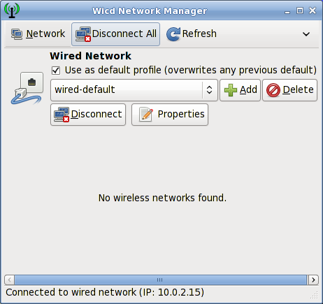

Network connections are managed by Wicd in Salix. It is an open source wired and wireless network manager for Linux which aims to provide a simple interface to connect to networks with a wide variety of settings.

It will connect to wired (Ethernet only, no PPPoE/DSL support yet) and wireless networks.
Note that wicd and wireless must be activated in the system services in order to make wireless networks visible on Wicd.